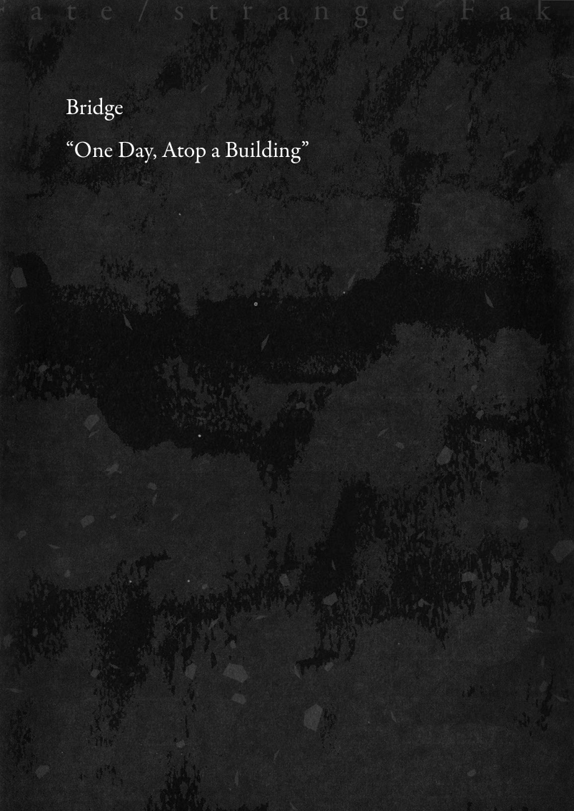
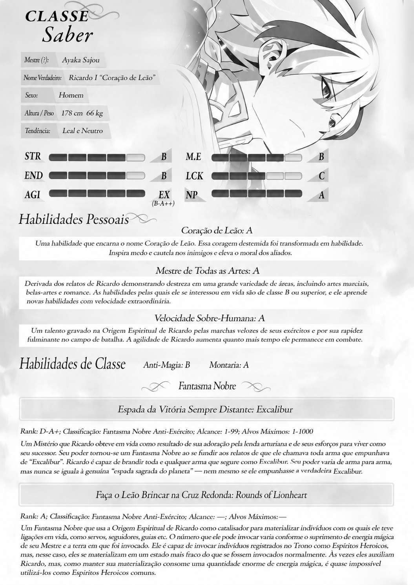
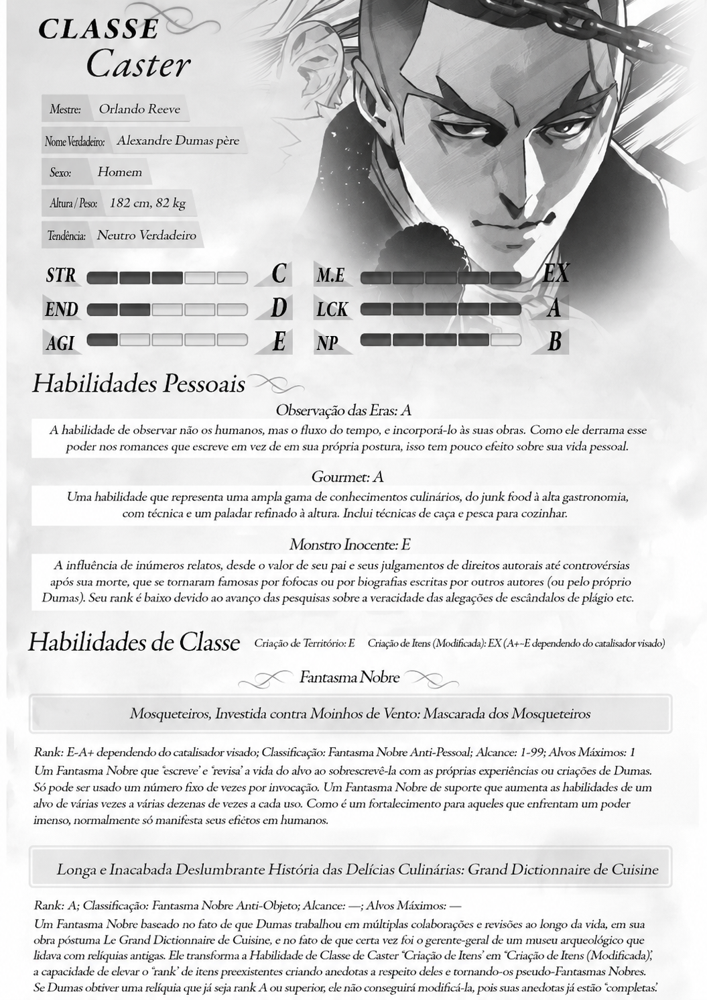

Dia 4, manhã: Crystal Hill, último andar
"Você ainda se recusa a desistir?"
Uma voz calma ecoou pela suíte do hotel-cassino Crystal Hill.
Uma quantidade imensa de Energia Mágica continuava a redemoinhar pelo espaço, que já parecia mais um museu ou salão de exposição do mobiliário do Rei dos Heróis do que o ateliê de Tiné.
Tiné Chelc, a garota que, até o dia anterior, havia sido a Mestre de Gilgamesh.
Seu corpo estava se tornando pouco mais que um condutor da Energia Mágica das linhas ley.
A Energia Mágica que inundava seu corpo corroía não apenas os Circuitos Mágicos espalhados por ele, mas também os vasos sanguíneos, os nervos e até os ossos.
Mesmo assim, Tiné não interrompeu o fluxo de Energia Mágica.
Havia mais de um dia inteiro que ela permanecia ali de pé, com as mãos estendidas sobre um peculiar círculo mágico desenhado no centro do aposento.
Uma voz andrógina a chamou por trás. ". . .
Duas horas e trinta e quatro minutos. É o tempo que falta para seus Circuitos se queimarem por completo."
Era uma voz calma, mas com um quê de frieza mecânica.
Aos ouvidos de Tiné, soava como a voz da própria morte.
"Sem tratamento, suas funções vitais cessarão cerca de treze minutos depois. Isso presumindo, é claro, que meus cálculos estejam em plena conformidade com os sistemas desta era."
Tiné aceitou as palavras da Morte, de Enkidu, como verdadeiras, mas mesmo assim continuou liberando Energia Mágica.
Enkidu, o Lancer inigualável, com os cabelos verde-claros de leve brilho esvoaçando.
Ele permanecia ao lado de Tiné, fitando o cadáver deitado no centro do círculo mágico com um traço de tristeza nos olhos.
"Cadáver" não era uma definição totalmente precisa.
Aquilo, a Origem Espiritual que, até a noite de dois dias antes, fora um rei refulgente, continuava morrendo e, ainda assim, sem viver.
Uma estagnação estranha, de cores iridescentes, se espalhava a partir do buraco cavado em seu peito. Ela e o veneno da Hidra que se espalhava a partir dos ferimentos de flecha iam se corroendo mutuamente.
A única coisa que mal continha a destruição contínua daquele corpo era a pressão da quantidade colossal de Energia Mágica que Tiné Chelc despejava nele, sustando à força a desintegração da Origem Espiritual.
"Eu não vou desistir. . . . Não posso desistir . . .!" Tiné gritou, mais para convencer a si mesma do que em resposta à pergunta de Enkidu.
Enkidu expôs a ela a realidade da situação com uma voz sem raiva nem tristeza.
"Se Gil estivesse vivo, provavelmente diria: 'Com certeza, vira-lata, você não é tão presunçosa a ponto de sugerir que foi sua inépcia que causou minha derrota?'"
"Eu sei disso! Mas . . . ainda que ele me chame de insolente ou me execute, eu não posso desistir agora . . .!"
Um ganido baixo de animal encheu o ar.
O lobo prateado esfregou-se de leve nas pernas de Tiné e então olhou para Enkidu. ". . .
Esta garota não é como aquela chamada Ayaka. Ela é uma dessas 'humanas' que você despreza, Mestre. Tem certeza?"
Em resposta à pergunta de Enkidu, o lobo prateado repetiu o choro baixo e se deitou ao lado da garota.
"Entendo. Você é bondoso, Mestre."
Enkidu agachou-se em silêncio, pousou uma mão nas costas do lobo prateado e a outra no ombro direito de Tiné.
Uma tremenda onda de Energia Mágica se ergueu do corpo do lobo prateado e envolveu o de Tiné.
"O que é . . .?"
"Adiei o colapso do seu corpo usando a Energia Mágica do meu Mestre. É temporário, mas você deve aguentar bem mais tempo do que eu calculei."
"Por quê . . .?"
Sem responder à pergunta de Tiné, Enkidu fitou o cadáver do amigo, envolto numa concha de Energia Mágica puxada das linhas ley da terra, e murmurou:
"Parece as grades do submundo. O que Ereshkigal diria se visse isto . . .?"
Então, estendeu a mão para dentro daquela concha.
Sua pele derreteu e se desfez no instante em que tocou a torrente de Energia Mágica, mas Enkidu a regenerou no mesmo momento, tocando o peito de Gil em seu centro.
"Quero a sua ajuda, Gil. Quero que acorde, se puder."
A Origem Espiritual do Rei dos Heróis estava perdida.
Mesmo que o revivessem, com seu Gate of Babylon fechado, eles não conseguiriam neutralizar o veneno. Ainda assim, Enkidu deixou um traço de emoção entrar na voz ao dizer ao amigo de toda uma vida:
"Quero . . . salvar a alma dela, aquela que encontrei antes de nascer como eu."
Depois, ergueu-se devagar e, olhando pela janela para a floresta que até o dia anterior fora seu quartel-general e agora era invadida por uma Energia Mágica que não era a sua, dirigiu uma pergunta ao centro daquela transformação.
"Você está nessa Origem Espiritual?"
O passado.
Ainda antes da própria vida.
"Ou . . . até as lembranças daquele jardim de flores já afundaram no esquecimento?"
Recordando coisas de antes de ter nascido pela primeira vez no mundo, murmurou: "Desta vez eu, não, nós, vamos salvá-la. Todos vocês . . ."
Sem demonstrar emoção, sussurrou o nome dela.
O nome da "humana" que um dia conhecera e que salvara sua alma . . . e que reencontrara mais tarde e, incapaz de salvar, destruíra junto de seu amigo.
". . .
Você ainda está aí . . . Huwawa?"
próximo episódio [Fake06]

